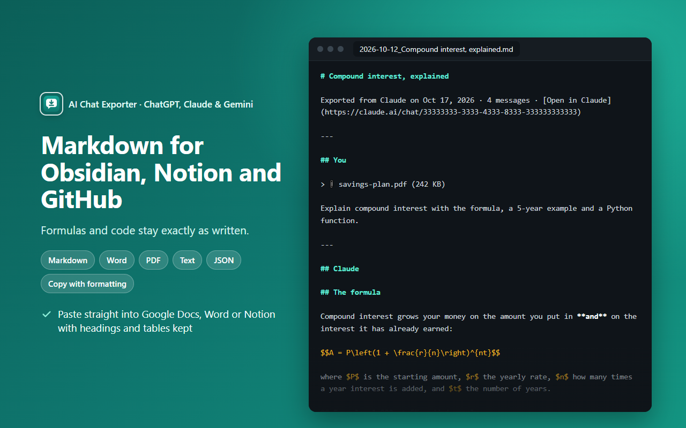

How to export AI chats to Markdown (Obsidian, Notion, GitHub)
Quick answer: click Export in the chat, choose Markdown, and drop the .md file into your Obsidian vault, Notion or a GitHub repo.
What you get
- A title, one section per message (
## You/## ChatGPT), and a link back to the chat. - Formulas kept as
$…$and$$…$$— the syntax Obsidian, GitHub and most note apps render. - Code blocks with their language, tables as Markdown tables, sources as
[1]links.

The one-click way
- Install AI Chat Exporter: ChatGPT, Claude & Gemini (free).
- Open the chat on chatgpt.com, claude.ai or gemini.google.com.
- Click Export , choose Markdown and click the big button.
Is it private?
Yes. The file is made on your own computer, inside your browser. No chat content is sent to us — there is no CarryAll server. No account, no analytics, no ads. Details in the privacy policy.
Try it free
Free with no daily limits and no sign-in. Works on chatgpt.com, claude.ai and gemini.google.com.
Add to Chrome — it's freeQuestions
Does Obsidian show the formulas?
Yes. Obsidian renders $…$ and $$…$$ math.
Can I get JSON instead?
Yes, choose JSON for structured data for your own tools.
Is it free?
Exporting one chat at a time is free and unlimited.
I made this extension (CarryAll). The manual ways above work without it — use whichever suits you.